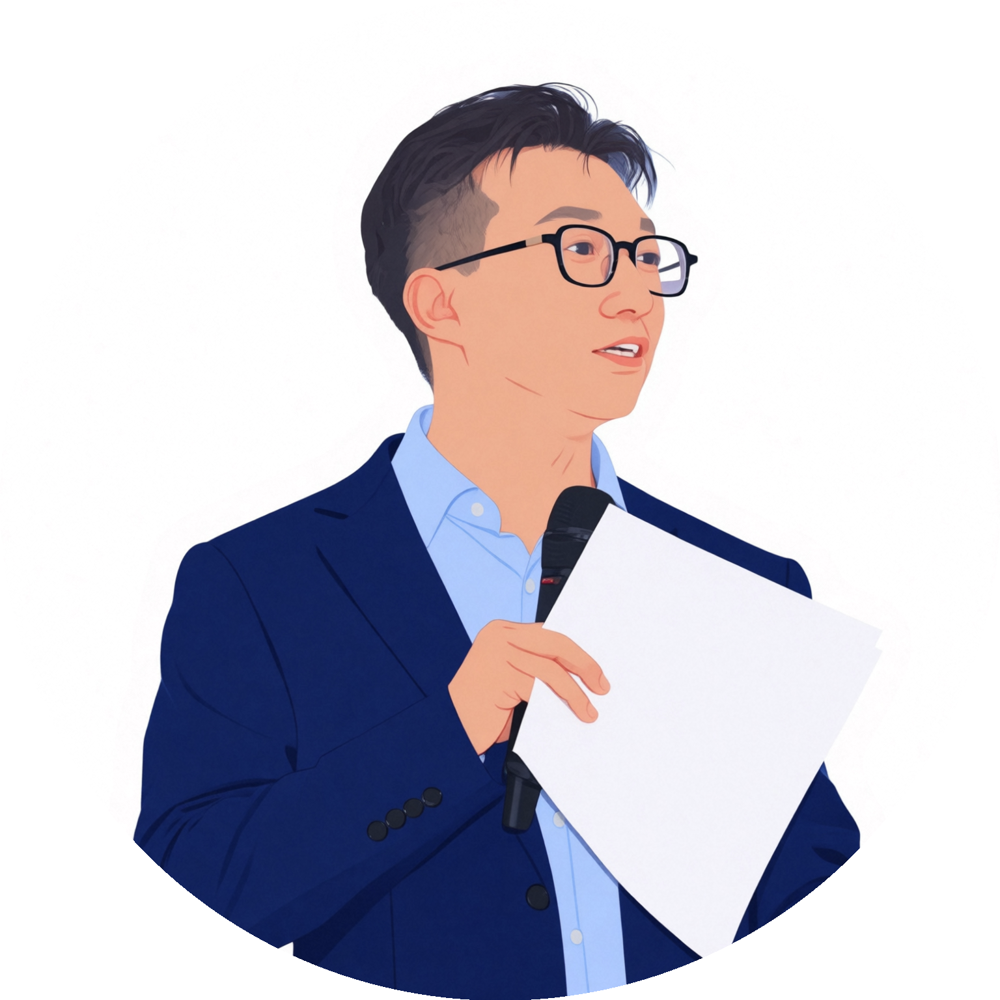

加入 IBM，开启大厂生涯
加入 IBM 中国，从销售顾问做起，直至业务大区经理。
主动申请转岗到培训部门，成为内部讲师。五年为IBM输送了3000+职业经理人。
"那时候觉得，能在 IBM 这样的大平台做到全球认证的高级培训师，已经是职业生涯的天花板了。"
李骅的转型故事 · 一个关于认知觉醒和自我突破的旅程
希望我的经历，能给你一些启发和勇气

《做好一人公司》作者 | Solourwork 创始人
前 IBM/华为销售专家，深耕企业服务市场26年，业务横跨咨询、销售、培训和投行四大领域。2016年转型一人公司，实现时间与精神自由。
坚信"一人公司不是退路，而是更高级的活法"，致力于帮助 10 万 + 专业人士打造可持续的个人事业。
26年职场生涯，5次重大转型，最终找到属于自己的路
加入 IBM 中国，从销售顾问做起，直至业务大区经理。
主动申请转岗到培训部门，成为内部讲师。五年为IBM输送了3000+职业经理人。
一次给某大厂做培训，课后有位学员说："李老师，你讲得真好。但如果离开 IBM 这个平台，还会有这么多企业请你吗？"
这句话如当头棒喝。我意识到：很多所谓的"成功",其实是平台的成功，而非个人的能力。我开始思考：如果离开 IBM，我还能靠什么生存？
从那时起，我开始有意识地打造个人品牌：写文章、做分享、积累行业影响力。
在 IBM 的第 5 个年头，我决定离开。家人朋友都不理解："放着好好的金饭碗不要，非要自己折腾？"
但我知道：这不是冲动，而是深思熟虑后的选择。我已经积累了足够的专业能力、行业资源和客户信任。
第一年：收入只有之前的 20%，焦虑到失眠。
第二年：找到节奏，收入达到工资的50%，时间自由翻倍。
第三年：在所经营的领域成为KOL，同时服务华为、钉钉、字节、百度等大厂，收入翻倍，达到了最佳状态。
理解到一个人的成功不算成功，能帮助更多人实现自由，才是真正有意义的事业。总结OPC方法论，出版全球第一本拥有系统方法论的一人公司书籍《做好一人公司：自我觉醒的活法》。
创立 Solourwork，不只是分享方法论，更是要打造一个互助成长的社群。让每个选择一人公司的人，都不再孤单。
这些教训，希望能帮你少走弯路
至少准备 6 个月的生活费 + 启动资金。我在离职前已经积累了稳定的客户资源，这是底气所在。如果还没有，建议先副业尝试，验证可行性后再全职。
早期我什么都接：培训、咨询、写稿、代运营……结果累到崩溃还不赚钱。后来聚焦"销售培训"这一个细分领域，反而收入翻倍。找到你的甜蜜点（擅长×喜欢×能赚钱）。
纯卖时间永远赚不到大钱。要把服务标准化、产品化：同样的内容，一次卖给 1 个人和卖给 100 个人，边际成本天壤之别。课程、模板、书籍都是好选择。
一个人走得快，一群人走得远。加入高质量的同行社群，定期交流、资源共享、互相打气。Solourwork 就是要打造这样的圈子。
一人公司最大的敌人是自己：自我怀疑、拖延、孤独感。建立规律的作息、运动的习惯、正念的练习。身心健康是一切的基础。
市场在变、工具在变、客户需求在变。停止学习等于慢性自杀。我每天至少花 2 小时阅读、上课、向高手请教。学习是最好的投资。
无论你是正在考虑转型，还是已经走在路上一人公司的路上
都欢迎加入社群，我们一起交流成长